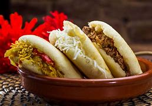

Foods
Picanha
Picanha is a highly prized cut of beef in Brazil.
It’s situated on the back side of the animal, above the butt, where it sits on a fat cap.
Picanha is mostly used for churrasco (grilled meat), where it’s first grilled and then sliced off a skewer.
This cut has very little fat in the meat, so it must be cooked perfectly to avoid toughness.
Every Brazilian churrasco features picanha, and the best churrascarias include it on their menus.

Lechona
Lechona is a traditional Colombian dish consisting of a whole roasted pig stuffed with onions, peas, potatoes, fresh herbs, and various spices.
The pig is roasted until the meat is tender and succulent.
It’s usually prepared for celebrations and festivities, serving as many as 100 portions from one lechona.
You can find this unique Colombian delicacy in numerous restaurants throughout the country’s largest cities.